Estas son algunas de las investigaciones científicas creativas y proyectos interdisciplinarios que he desarrollado. Cada uno nace del cruce entre el arte, la ciencia y la experiencia sensible, y busca generar nuevas formas de exponer temas importantes.
Metamorfosis
Proyecto de concienciación sobre el abuso emocional que explora la transformación del cuerpo y la psique tras el trauma. A través de una narrativa visual íntima y simbólica, se revela el viaje interno de una sobreviviente: desde la fractura hasta el renacer, desde el silencio hacia la reconstrucción.
Arte TerapéuticoConcienciación SocialTrauma
Metamorfosis: Propuesta plástica para la educación y visibilización del abuso emocional
Este trabajo de producción e investigación creativa centra su atención en la visibilización del abuso emocional a través de una exposición de arte como herramienta educativa. La misma, tiene el fin de servir a la población puertorriqueña como método de prevención contra la violencia o abuso emocional en las relaciones interpersonales, especialmente en las relaciones de pareja. Este proyecto se basa en la realización de obras de arte inspiradas en las vivencias, tanto hombres como mujeres, que han sufrido violencia emocional. Lo distinto de esta propuesta es que, en lugar de representar cómo o qué es la violencia, se pretende representar cómo se siente el vivir día a día siendo violentada emocionalmente. La idea es adentrarse a la psiquis, la mente y la vida cotidiana de una sobreviviente de violencia y las secuelas físicas que ocasiona en las relaciones. En síntesis, es un proyecto de diseño con el propósito de educar, concientizar y de prevención contra la violencia.
"Esta exposición tuvo como propósito educar a las mujeres y a la población puertorriqueña sobre los efectos del abuso emocional. Como artista, y a través de conversaciones con amigas, me percaté de cuán normalizado está este tipo de violencia en las relaciones interpersonales. Por ello, asumí la tarea de visibilizar —desde el arte— cómo se siente y se vive este tipo de abuso desde adentro."
DNA 205 es una investigación que une arte y ciencia para representar visualmente la genética del cáncer de mama en el núcleo familiar. A través de obras artísticas, buscó educar y apoyar emocionalmente a sobrevivientes.
Arte y CienciaGenéticaSaludEducación
DNA 205
Este trabajo de arte, producción e investigación creativa centra su atención en la prevención del cáncer genético de mama a través de una exposición de arte como herramienta educativa. El cáncer de mama es una enfermedad genética en la que las células se desarrollan de manera descontrolada. Por tanto, tener antecedentes familiares representa un riesgo mayor de padecer la enfermedad. La muestra expositiva presenta los procesos, las experiencias y los testimonios de los familiares de la autora del proyecto que han sufrido tanto la enfermedad como el proceso de tratamiento médico. Los medios utilizados fueron la creación de pinturas, dibujos e instalaciones, diversas imágenes, tales como: el ADN 1, células saludables, células cancerosas con el propósito de documentar el proceso de diagnóstico y tratamiento de la enfermedad. Estos documentos sirvieron para producir una instalación que acerca al público a la realidad vivida por los pacientes. El fin primordial de la exposición es dar a conocer la importancia de acudir a su médico para realizar los exámenes de rigor y detectar a tiempo la aparición de la enfermedad, así como prevenir su desarrollo mediante la reducción de los factores de riesgo.
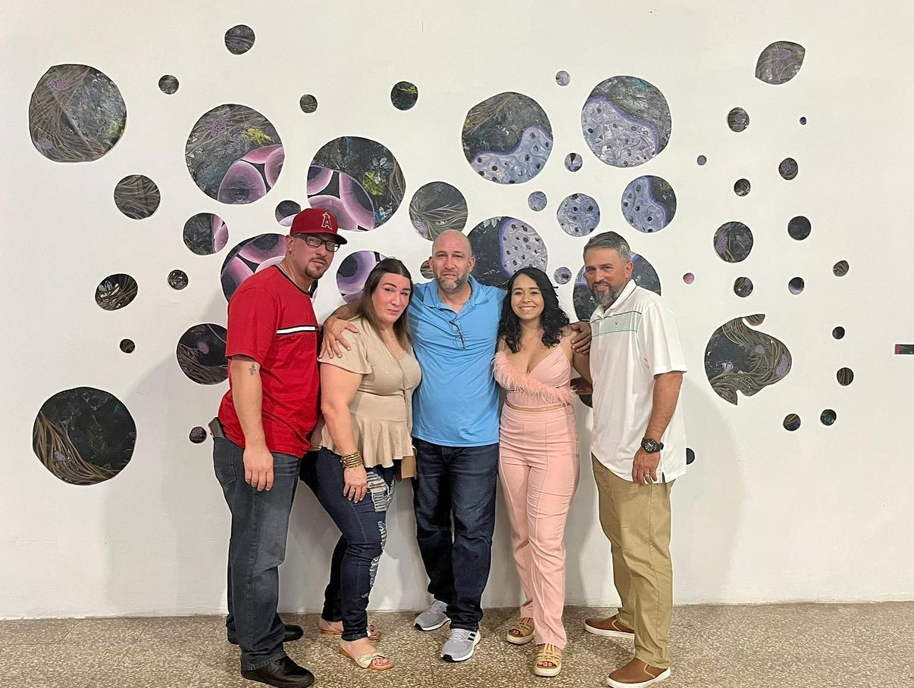
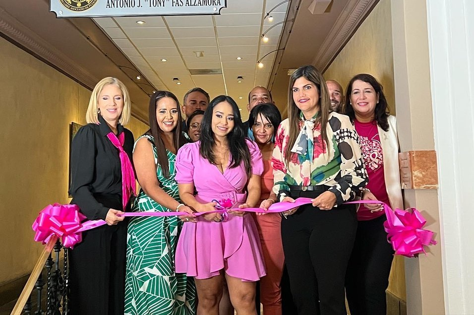
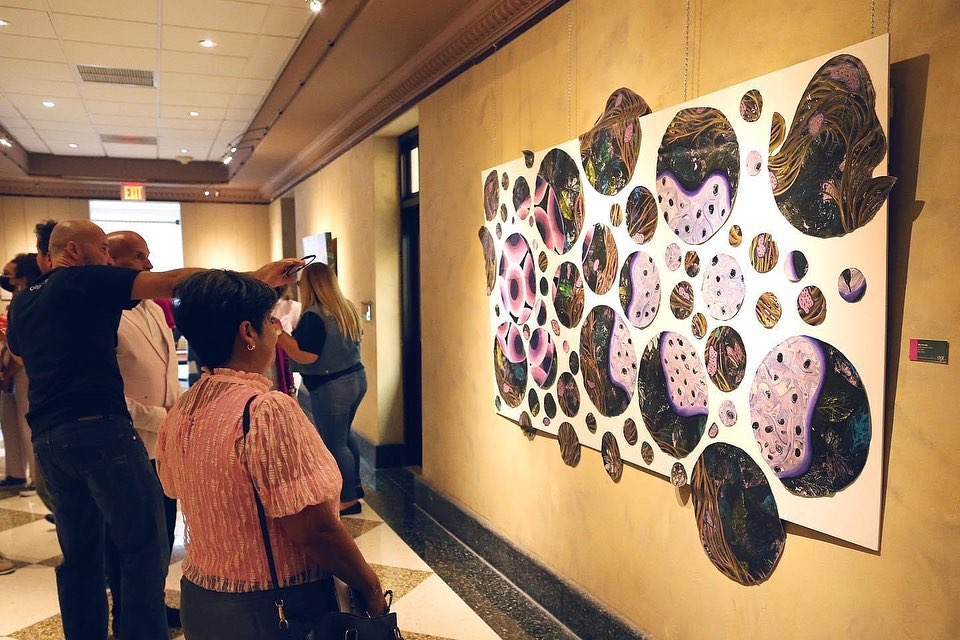
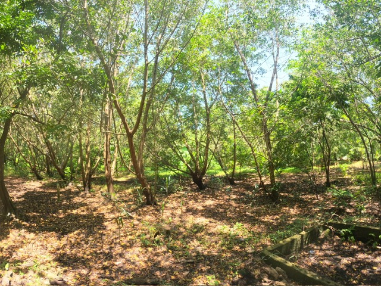
Cobana Negra
Investigación sobre el monitoreo ambiental de la especie Stahlia monosperma en la Reserva Natural Ciénaga Las Cucharillas, enfocándose en su respuesta ecofisiológica ante el cambio climático. El estudio, realizado en colaboración con Corredor del Yaguazo, aporta recomendaciones para proyectos de reforestación y conservación comunitaria en Puerto Rico.
EcologíaConservaciónCambio ClimáticoInvestigación de Campo
Environmental monitoring of Stahlia monosperma populations established in the "Ciénaga Las Cucharillas" Natural Reserve: An analysis of environmental parameters
Investigación sobre el monitoreo ambiental de la especie Stahlia monosperma (Cobana negra) en la Reserva Natural Ciénaga Las Cucharillas, enfocándose en su respuesta ecofisiológica ante el cambio climático. El estudio, realizado en colaboración con Corredor del Yaguazo y el Dr. Wilmer Rivera, aporta recomendaciones para proyectos de reforestación y conservación comunitaria en Puerto Rico.
La misma, se presentó en la conferencia SER North American Conference celebrada en Vancouver, Canadá, en 2024. Su estudio se centró en el monitoreo ambiental de Stahlia monosperma ("Cobana Negra") en la Reserva Natural Ciénaga Las Cucharillas, en Cataño, Puerto Rico. A través del curso CIBI-3027: Cambio Climático y los Sistemas Ecológicos del Caribe, integró prácticas de campo junto a organizaciones comunitarias como el Corredor del Yaguazo. La investigación analizó la respuesta ecofisiológica de esta especie ante distintas condiciones microclimáticas, con el fin de generar recomendaciones para proyectos de rehabilitación ecológica. Sus hallazgos aportan al entendimiento del comportamiento de especies críticas en el contexto del cambio climático, fortaleciendo el vínculo entre ciencia, comunidad y conservación ambiental.
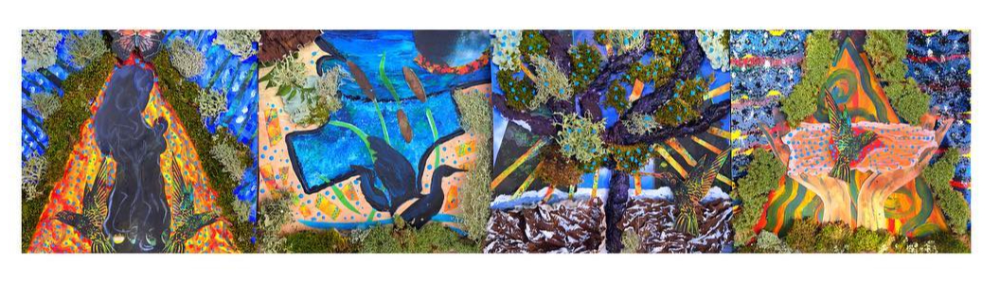
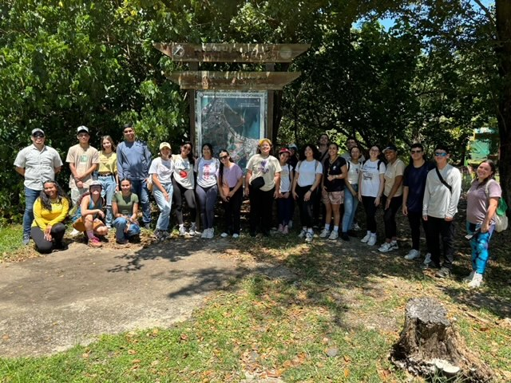
¿Interesado en colaborar?
Si te interesa colaborar en proyectos de investigación interdisciplinaria o conocer más sobre estas investigaciones, no dudes en contactarme.

 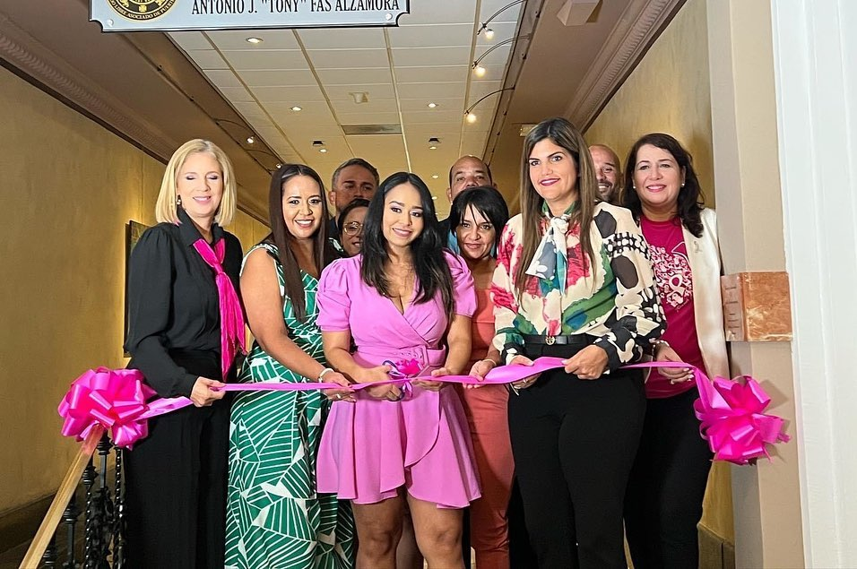
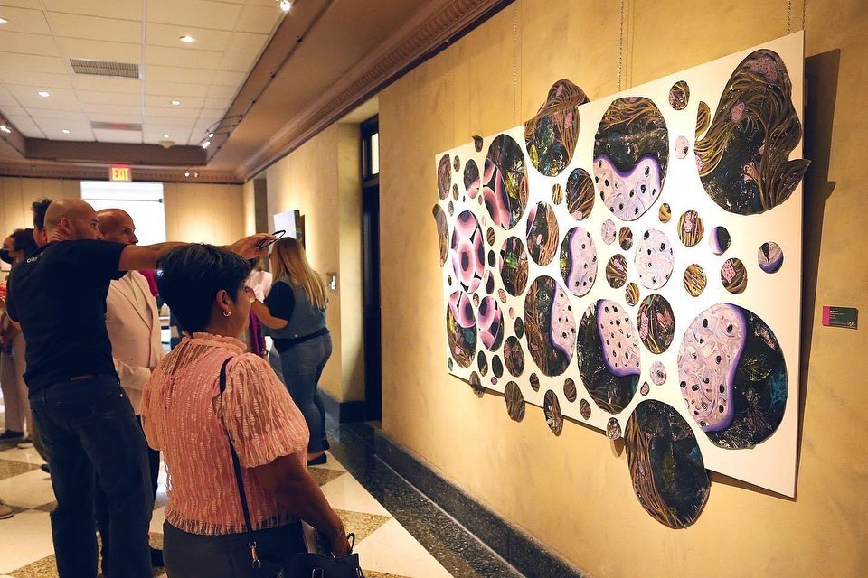
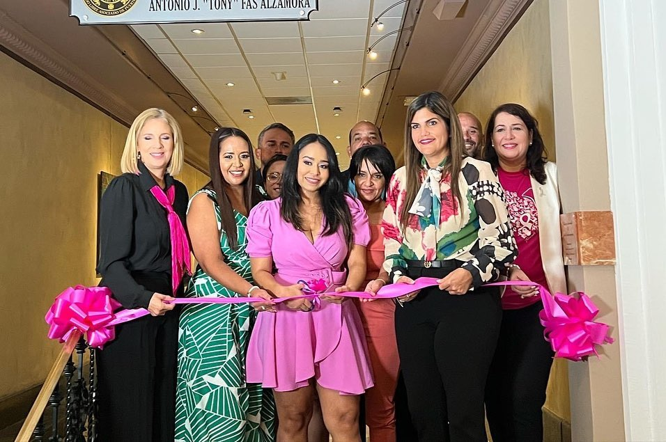
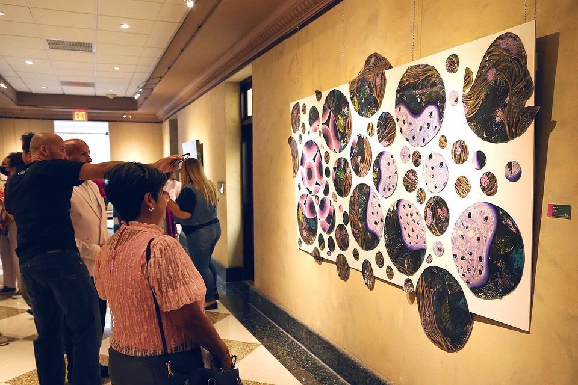
.jpg)
 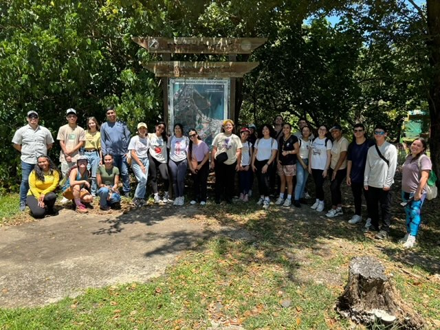
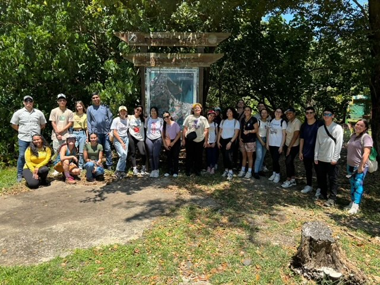